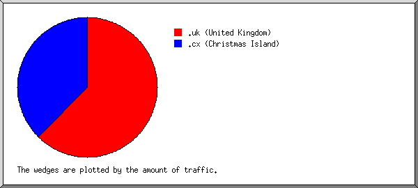
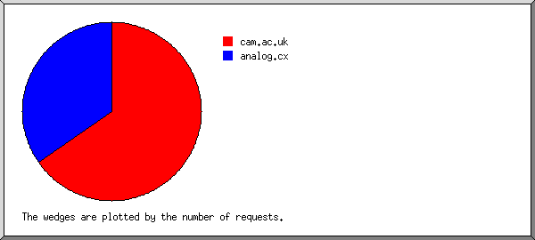
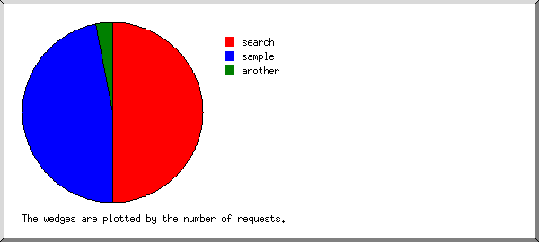
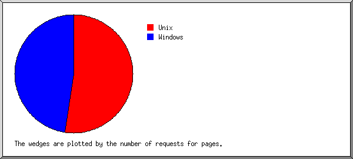
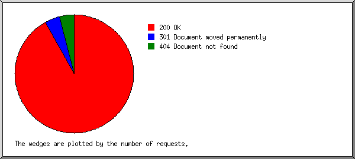
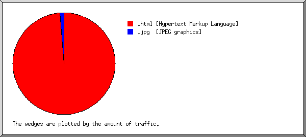
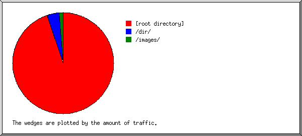
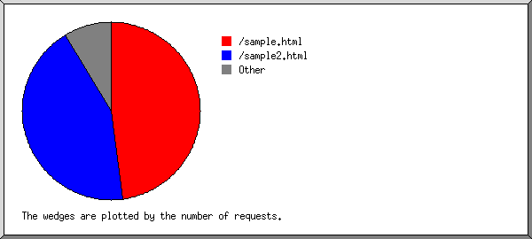

) represents 1 request
for a page.
) represents 1 request
for a page.
(Go To: Top: General Summary: Monthly Report: Daily Summary: Hourly Summary: Domain Report: Organisation Report: Search Word Report: Operating System Report: Status Code Report: File Size Report: File Type Report: Directory Report: Request Report)
This report contains overall statistics.
Successful requests: 46
Average successful requests per day: 10
Successful requests for pages: 44
Average successful requests for pages per day: 10
Failed requests: 2
Redirected requests: 2
Distinct files requested: 4
Distinct hosts served: 2
Data transferred: 48.75 kilobytes
Average data transferred per day: 11.82 kilobytes
(Go To: Top: General Summary: Monthly Report: Daily Summary: Hourly Summary: Domain Report: Organisation Report: Search Word Report: Operating System Report: Status Code Report: File Size Report: File Type Report: Directory Report: Request Report)
This report lists the activity in each month.
Each unit () represents 1 request
for a page.
month: reqs: pages: --------: ----: -----: Dec 1999: 11: 11:Busiest month: Jan 2000 (33 requests for pages).
(Go To: Top: General Summary: Monthly Report: Daily Summary: Hourly Summary: Domain Report: Organisation Report: Search Word Report: Operating System Report: Status Code Report: File Size Report: File Type Report: Directory Report: Request Report)
This report lists the total activity for each day of the week, summed over all the weeks in the report.
Each unit () represents 1 request
for a page.
day: reqs: pages: ---: ----: -----: Sun: 11: 11:
(Go To: Top: General Summary: Monthly Report: Daily Summary: Hourly Summary: Domain Report: Organisation Report: Search Word Report: Operating System Report: Status Code Report: File Size Report: File Type Report: Directory Report: Request Report)
This report lists the total activity for each hour of the day, summed over all the days in the report.
Each unit () represents 1 request
for a page.
hour: reqs: pages: ----: ----: -----: 0: 0: 0: 1: 0: 0: 2: 2: 2:11: 2: 2:
(Go To: Top: General Summary: Monthly Report: Daily Summary: Hourly Summary: Domain Report: Organisation Report: Search Word Report: Operating System Report: Status Code Report: File Size Report: File Type Report: Directory Report: Request Report)
This report lists the countries of the computers which requested files.

Listing domains, sorted by the amount of traffic.
reqs: %bytes: domain ----: ------: ------ 30: 62.24%: .uk (United Kingdom) 16: 37.76%: .cx (Christmas Island)
(Go To: Top: General Summary: Monthly Report: Daily Summary: Hourly Summary: Domain Report: Organisation Report: Search Word Report: Operating System Report: Status Code Report: File Size Report: File Type Report: Directory Report: Request Report)
This report lists the organisations of the computers which requested files.

Listing organisations, sorted by the number of requests.
reqs: %bytes: organisation ----: ------: ------------ 30: 62.24%: cam.ac.uk 16: 37.76%: analog.cx
(Go To: Top: General Summary: Monthly Report: Daily Summary: Hourly Summary: Domain Report: Organisation Report: Search Word Report: Operating System Report: Status Code Report: File Size Report: File Type Report: Directory Report: Request Report)
This report lists which words people used in search engines to find the site.

Listing query words, sorted by the number of requests.
reqs: search term ----: ----------- 33: search 31: sample 2: another
(Go To: Top: General Summary: Monthly Report: Daily Summary: Hourly Summary: Domain Report: Organisation Report: Search Word Report: Operating System Report: Status Code Report: File Size Report: File Type Report: Directory Report: Request Report)
This report lists the operating systems used by visitors.

Listing operating systems, sorted by the number of requests for pages.
no.: reqs: pages: OS ---: ----: -----: -- 1: 25: 23: Unix : 25: 23: Linux 2: 21: 21: Windows : 21: 21: Windows 98
(Go To: Top: General Summary: Monthly Report: Daily Summary: Hourly Summary: Domain Report: Organisation Report: Search Word Report: Operating System Report: Status Code Report: File Size Report: File Type Report: Directory Report: Request Report)
This report lists the HTTP status codes of all requests.

Listing status codes, sorted numerically.
reqs: status code ----: ----------- 46: 200 OK 2: 301 Document moved permanently 2: 404 Document not found
(Go To: Top: General Summary: Monthly Report: Daily Summary: Hourly Summary: Domain Report: Organisation Report: Search Word Report: Operating System Report: Status Code Report: File Size Report: File Type Report: Directory Report: Request Report)
This report lists the sizes of files.

size: reqs: %bytes:
-----------: ----: ------:
0: 0: :
1B- 10B: 0: :
11B- 100B: 0: :
101B- 1kB: 24: 45.61%:
1kB- 10kB: 22: 54.39%:
(Go To: Top: General Summary: Monthly Report: Daily Summary: Hourly Summary: Domain Report: Organisation Report: Search Word Report: Operating System Report: Status Code Report: File Size Report: File Type Report: Directory Report: Request Report)
This report lists the extensions of files.

Listing extensions with at least 0.1% of the traffic, sorted by the amount of traffic.
reqs: %bytes: extension ----: ------: --------- 44: 98.81%: .html [Hypertext Markup Language] 2: 1.19%: .jpg [JPEG graphics]
(Go To: Top: General Summary: Monthly Report: Daily Summary: Hourly Summary: Domain Report: Organisation Report: Search Word Report: Operating System Report: Status Code Report: File Size Report: File Type Report: Directory Report: Request Report)
This report lists the directories from which files were requested. (The figures for each directory include all of its subdirectories.)

Listing directories with at least 0.01% of the traffic, sorted by the amount of traffic.
reqs: %bytes: directory ----: ------: --------- 42: 94.85%: [root directory] 2: 3.95%: /dir/ 2: 1.19%: /images/
(Go To: Top: General Summary: Monthly Report: Daily Summary: Hourly Summary: Domain Report: Organisation Report: Search Word Report: Operating System Report: Status Code Report: File Size Report: File Type Report: Directory Report: Request Report)
This report lists the files on the site.

Listing files with at least 20 requests, sorted by the number of requests.
reqs: %bytes: last time: file ----: ------: ---------------: ---- 22: 54.39%: 4/Jan/00 13:11: /sample.html 20: 40.47%: 3/Jan/00 09:41: /sample2.html 4: 5.15%: 3/Jan/00 12:11: [not listed: 2 files]
(Go To: Top: General Summary: Monthly Report: Daily Summary: Hourly Summary: Domain Report: Organisation Report: Search Word Report: Operating System Report: Status Code Report: File Size Report: File Type Report: Directory Report: Request Report)